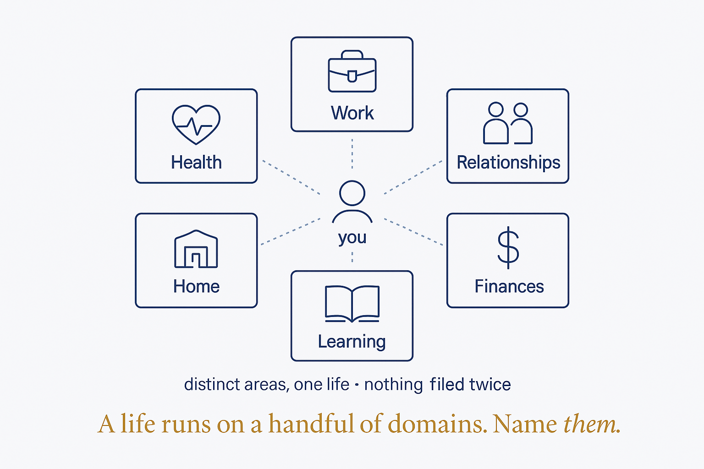

The handful of distinct areas a life runs on — health, work, relationships, finances — each modeled and reviewed on its own.

The handful of distinct areas a life runs on — health, work, relationships, finances — each modeled and reviewed on its own.
A life isn't one undifferentiated blob; it runs on a small set of distinct domains — health, work, relationships, finances, home, learning, and so on — each with its own state, its own rhythm, and its own kind of evidence. Naming them explicitly is the first act of structure: you can't design, review, or balance what you haven't separated. Life Domains are to a modeled self what entities are to a data model — the stable containers everything else hangs off. In practice they become the top-level shape of the personal knowledge system: sources and captures route into a domain, each domain rolls up its own review, and the whole picture is the sum of the parts rather than a vague sense of "how life is going." Deliberately separating the domains is what lets you notice that one is thriving while another is quietly starved — the insight a single blurred view always hides.